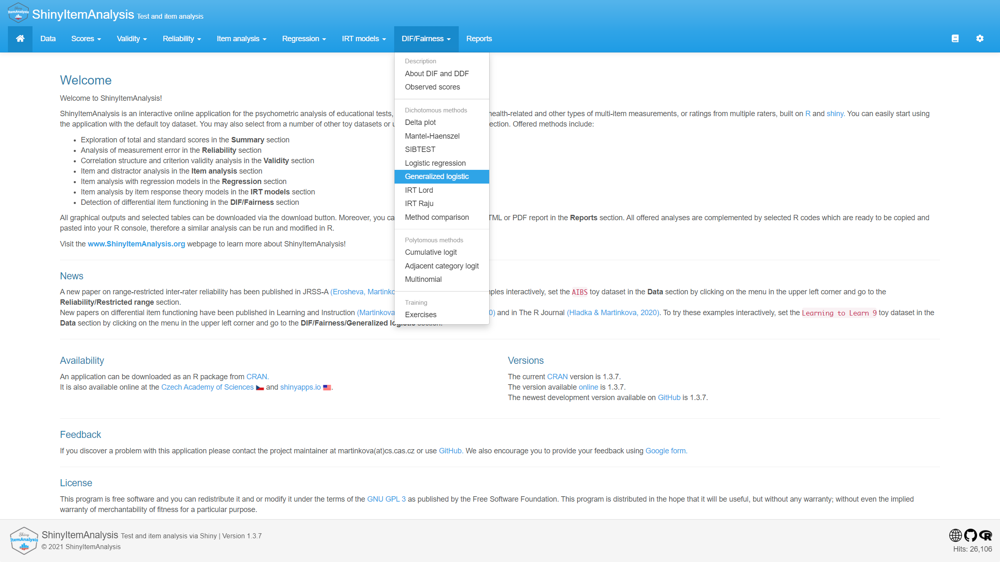
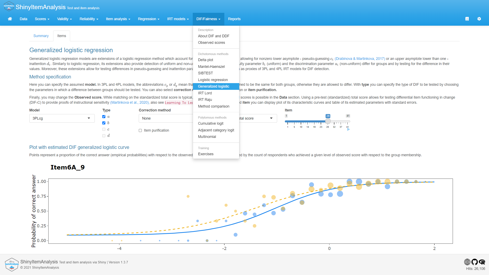

Test and item analysis via shiny


Overview
ShinyItemAnalysis is an R package including functions and interactive shiny application for the psychometric analysis of educational tests, psychological assessments, health-related and other types of multi-item measurements, or ratings from multiple raters. Offered methods include:
- Exploration of total and standard scores
- Analysis of measurement error and reliability
- Analysis of correlation structure and validity
- Traditional item analysis
- Item analysis with regression models
- Item analysis with IRT models
- Detection of differential item functioning

Number of toy datasets is available, the interactive application also allows the users to upload and analyze their own data and to automatically generate PDF or HTML reports.
ShinyItemAnalysis is available online at Czech Academy of Sciences and shinyapps.io. It can be also downloaded from CRAN. Visit our web page about ShinyItemAnalysis to learn more!
Installation
The easiest way to get ShinyItemAnalysis is to install it from CRAN:
install.packages("ShinyItemAnalysis")
From Click here for more information about installing versions 1.3.8+
ShinyItemAnalysis version 1.3.8 on, only the most necessary package dependencies are installed out of the box. You may be prompted later on to install additional packages ensuring a smooth run of the interactive application. To install everything straight out, use rather:
install.packages("ShinyItemAnalysis", dependencies = TRUE)
Or you can get the newest development version from GitHub:
if(!require(remotes)) install.package("remotes")
remotes::install_github("patriciamar/ShinyItemAnalysis")Version
Current version available on CRAN is 1.3.8. The newest development version available on GitHub is 1.3.8.
Version available online at Czech Academy of Sciences is 1.3.8. Version available online at shinyapps.io is 1.3.8.
Usage
It is very easy to run ShinyItemAnalysis in R:
ShinyItemAnalysis::startShinyItemAnalysis()Or try it directly online at Czech Academy of Sciences or shinyapps.io!
References
When using ShinyItemAnalysis software, we appreciate if you include a reference in your publications. To cite the software, please, use:
Martinková P., & Drabinová A. (2018) ShinyItemAnalysis for teaching psychometrics and to enforce routine analysis of educational tests. The R Journal, 10(2), 503-515. doi: 10.32614/RJ-2018-074.
Czech speakers can also refer to paper in journal Testforum.
Getting help and provide feedback
If you find any bug or just need help with ShinyItemAnalysis you can leave your message as an issue here or directly contact us at martinkova@cs.cas.cz. We warmly encourage you to provide your feedback using Google form.
License
This program is free software and you can redistribute it and or modify it under the terms of the GNU GPL 3.